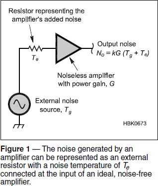
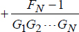
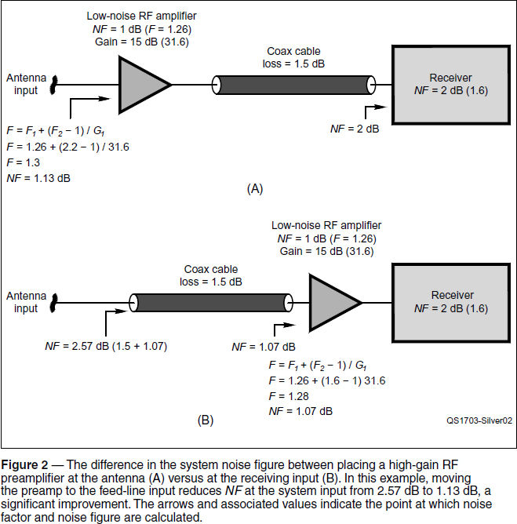

Experiment #170 — Noise Figure
On our MF and lower HF bands, the received signal-to-noise ratio (SNR) is dominated by galactic noise from 15 to 30 MHz at night by atmospheric noise from storms and man-made sources below 15 MHz.
The type of noise we are mostly concerned with in sensitive RF receiving systems is thermal noise, also called Johnson-Nyquist noise. There are many other types of noise — shot noise, flicker noise, and even popcorn noise — that are generated inside our electronic devices. From the external world, atmospheric noise is accompanied at VHF and above by galactic noise and sun noise.
Thermal noise is generated in all conducting materials by the random vibration of free electrons due to their thermal energy. The higher the material’s temperature, the larger the vibrations of the free electrons become. This motion of charge creates a noise voltage in any conductor not at absolute zero.
Based on material1 by Paul Wade, W1GHZ, in The ARRL Handbook, the basics of thermal noise are as follows: Every resistance (and all conductors have resistance) generates a root-mean-square (RMS) noise voltage:
e = √4kTRB
where k is Boltzmann’s constant (1.38 × 10–23 joules / K), T is the absolute temperature in kelvin (K, which is equal to the temperature in Celsius plus 273), R is the resistance, and B is the bandwidth in hertz. Converting to power, e2 / 4R, the noise power generated by the resistor is:
Pn = kTB (watts)
This independence of frequency is why thermal noise is called white noise and has a power that depends only on temperature.
Note that all resistances at the same temperature generate the same noise power. Similarly, if two noise sources generate the same power in the same bandwidth, they are said to have the same noise temperature, Tn. This is the temperature at which a resistor at the same temperature would generate the same noise power as the source, whether it is an electronic circuit, a cable, or an antenna.
The amount of power per unit of bandwidth is called power density or spectral density and is equal to kT watts per Hz. Because power is proportional to the square of voltage, the corresponding voltage density or spectral density is measured in volts / √Hz, spoken as “volts per root hertz.”
Calculating noise power density at 290 K (290 K = 16.9°C = 62.6°F) gives:
Pn = (1.38 × 10–23 × 290) B = 400 × 10–23 B
Multiply by the bandwidth in hertz to get the available noise power at 290 K. The choice of 290 K is simply for convenient calculations because Pn is 400 B at that temperature. Converting to dBm by calculating 10 log(Pn), we get –174 dBm / Hz.
Measuring Noise with Noise Figure
Continuing to build on W1GHZ’s material in The ARRL Handbook, all amplifiers add additional noise to the noise present at their input. The input noise per unit of bandwidth is Ni = kTg, where Tg is the noise temperature at the amplifier’s input. Amplified by power gain, G, the output noise power is kTgG. The noise power added by the amplifier, kTn, is then added to the amplified input noise to produce a total output noise, No = kTgG + kTn = k(TgG + Tn).
We can model the amplifier as ideal and noise-free and add a noise-generating resistor of temperature Te = Tn / G at the input. In this way, all sources of noise can be treated as inputs to the amplifier, as illustrated by Figure 1. Substituting for Tn in the previous equation, the output noise is then No = kG (Tg + Te).

The noise added by an amplifier can then be represented as kGTe, which is the amplifier’s noise temperature amplified by the amplifier’s gain. Te is sometimes referred to as excess temperature.
Because amplifiers have many different values of gain, there needs to be a way to compare their noise performance without a bunch of calculations. The answer is noise factor and noise figure.
The noise factor F of an amplifier is the ratio of the total noise output of an amplifier with an input Tg of 290 K to the noise output of an equivalent noise-free amplifier. The easiest way to do this is to use noise temperatures: F = 1 + Te / Tg. It is often more convenient to work with noise figure, NF, the logarithm of noise factor expressed in dB:
NF = 10 logF and F = log–1(NF / 10)
If the signal-to-noise ratio (SNR) in decibels is known at the input and output:
NF = SNRin – SNRout or SNRout = SNRin – NF
Noise figure is sometimes stated as input noise figure to emphasize that all noise sources and noise contributions are converted to an equivalent set of noise sources at the input of a noiseless device. In this way, noise performance can be compared on equal terms across a wide variety of devices. It also makes comparing their relative contributions to output noise much easier.
Location, Location, Location
When more than one noise-generating component is connected in series or cascade, they all contribute differently to the overall output noise level and SNR. Even a simple receiving system consists of three such components — antenna, feed line, and receiver — with each adding to, or even amplifying, the noise at its input. The Friis equation takes into account the gain or loss of each component and gives an overall system noise factor for N devices connected in series.


where device 1 is the one at the input to the system. Clearly, if the gain of the first stage, G1, is large, then the noise contributions of the succeeding stages become too small to be significant. In addition, the noise temperature of the first stage is the largest contributor to the overall system noise because it is amplified by all remaining stages.
The important thing to learn from the Friis equation is that noise-reduction efforts should be made at the input to the system. A good example is the question of where to put a preamp in an antenna system. Figure 2 shows the difference between placing the preamp at the input to a lossy feed line and placing it at the receiver input.

You can hear the Friis equation in action with a simple experiment using a VHF or UHF FM transceiver, a long length of coax or an attenuator, and a preamplifier.2, 3, 4
Choose some coax with about 3 – 6 dB of loss — 100 feet of RG-58 or RG-8X will do nicely at VHF or UHF. Connect the coax between a small antenna and your transceiver, then tune in a weak (distant) repeater, which is received with a noisy signal at your location. (If you use an attenuator, just add attenuation until a local repeater signal becomes noisy.) Add the preamp at the antenna and observe how much the SNR improves. Then move it to the other end of the coax, connecting it directly to the transceiver input, and observe SNR again. You will find that placing the high-gain preamp closer to the input of your receiving system results in a better SNR.
Notes
1Available from your ARRL dealer, or from the ARRL Store, ARRL Item no. 0628. Telephone toll-free in the US 888-277-5289 or 860-594-0355, fax 860-594-0303, www.arrl.org/shop, pubsales@arrl.org.